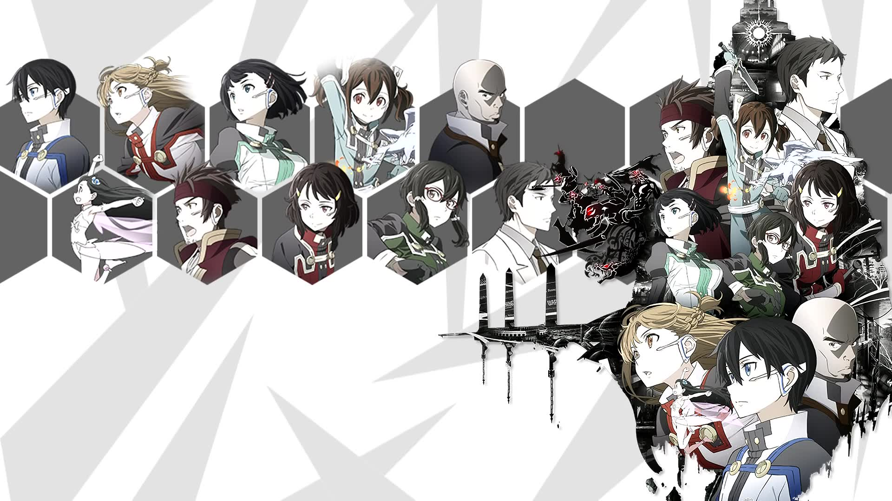
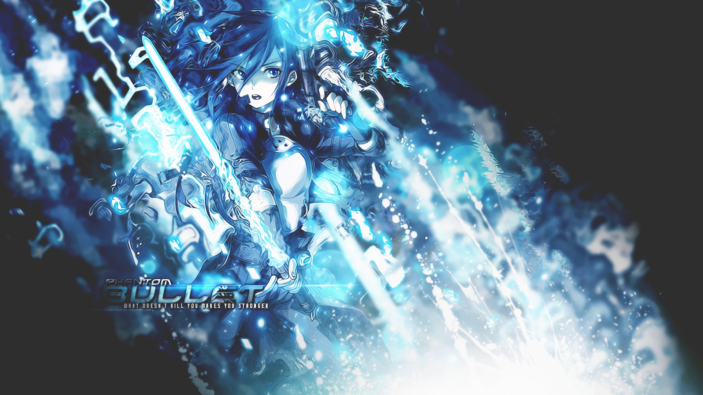
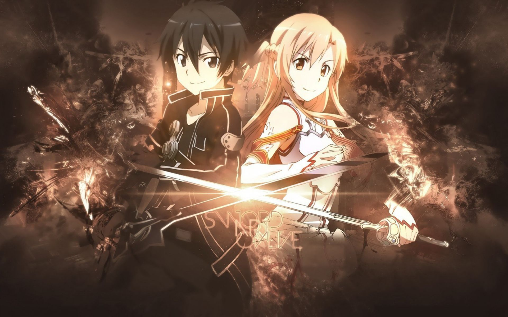

刀剑神域序列之争
刀剑神域三制作企划决定！
“这虽然是游戏，但可不是闹着玩的。” —— 茅场晶彦
“屏幕左上角那称为HP的蓝色条状物，可以看到生命的残值，虽然它还有八成左右，但不能把事情看得太过乐观。因为相对来说，我已经朝死亡深渊前进了两步。” —— 桐谷和人
“这个世界里，是没法隐藏泪水的啊。想要哭的时候，谁都忍不住的。” —— 结城明日奈
“与其因怀疑别人而后悔，不如因相信别人而后悔。” —— 桐谷和人
“坚强不是结果，是朝某个目标努力的过程！” —— 朝田诗乃
来一波番外吧

幽灵子弹死枪绝响

亚丝娜桐人一生推
